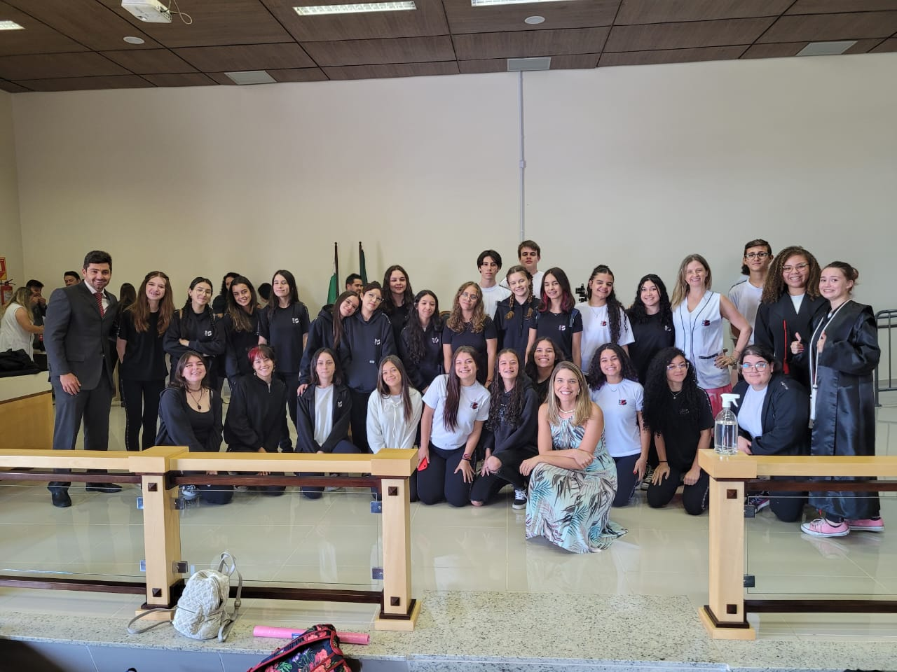

O CUIDADO COM A EDUCAÇÃO

O Colégio Estadual Sagrada Família é uma instituição pública, focada em ensinar e formar pessoas
Mostrar caminhos e escolhas, dentro dessas escolhas, profissões que podem transformar o mundo, dentre delas:
Desenvolvimento de Sistemas
Criado para mostrar aos alunos o quanto é importante conhecer um pouquinho sobre a internet e suas coisas, dentro do curso aprendemos a:
Formação de Docentes

O curso de formação de docentes é essencial para preparar professores qualificados, que possam educar, motivar e moldar as gerações futuras. Ele promove competências pedagógicas,
habilidades interpessoais e a capacidade de lidar com a diversidade, contribuindo para a qualidade da educação, o desenvolvimento da sociedade e a profissionalização da carreira docente ,
sua importância reside na formação de professores capazes de impactar positivamente a aprendizagem e o futuro das pessoas.
Técnico em Farmácia
O curso técnico de farmácia integrado ao ensino médio é importante porque prepara os alunos para carreiras na área da saúde, proporcionando-lhes conhecimentos práticos e teóricos essenciais.
Isso aumenta as oportunidades de emprego, contribui para a saúde pública, promove a conscientização sobre medicamentos e facilita a progressão educacional.
Além disso, desenvolve habilidades valiosas e contribui para a economia por meio da formação de profissionais farmacêuticos bem treinados.